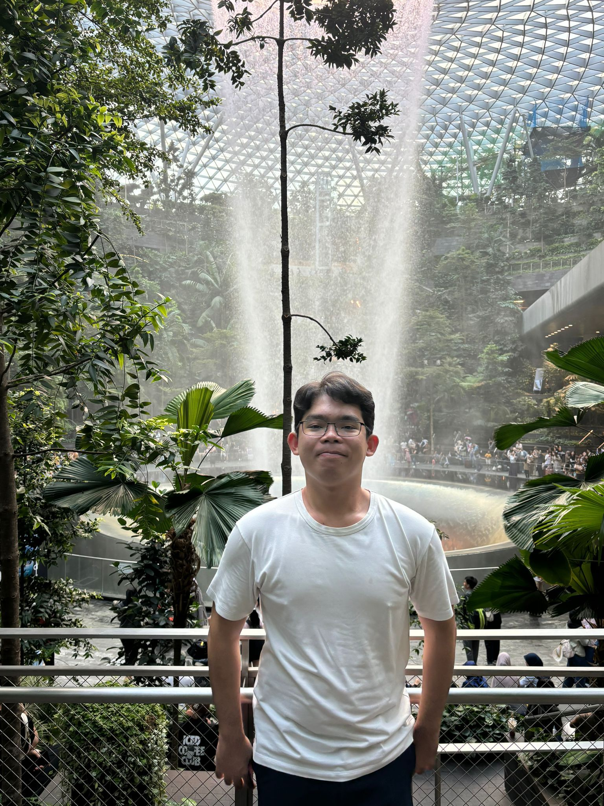

Project Slinger
a 2d pixel art game adventure platformer with self created character sprites, tilesets ,all created by me.
To find out my progress for this, check out the Project Slinger page.

Hello! I'm Khen, an aspiring developer currently pursuing a Diploma in Information Technology at Temasek Polytechnic (Year 1). Building on my foundation as an ITE graduate in IT Application Development, I am now deepening my technical expertise to bridge the gap between academic theory and professional execution.
I am interested in exploring my creative side through Pixel Art and Digital Illustration
My goal is to continuously evolve, contributing to innovative projects while refining my skills across both code and art. Whether I'm architecting clean code, designing engaging interfaces, or tackling logic-heavy problems, I am committed to delivering quality work that pushes the boundaries of what's possible.
Want to see what I've been working on? Check out my Projects page or learn more about my Skills.
a 2d pixel art game adventure platformer with self created character sprites, tilesets ,all created by me.
To find out my progress for this, check out the Project Slinger page.
A high-performance digital collection tracker utilizing PokeAPI and Firebase for real-time National Dex management. This cloud-integrated web app provides a mobile-optimized binder experience, allowing collectors to sync progress across devices and track specific rarity tiers like "Art Rare+" variants.
A full-stack marketplace built on the MVC pattern using SQL Server for robust data management. Focused on secure user authentication and dynamic product cataloging.
A mobile-first utility app designed for academic projection and course tracking. Built using Flutter/Dart for cross-platform compatibility.
A personal project focused on clean UI/UX design and modern web development workflows, emphasizing mental health tracking and minimalist aesthetics.
GeoSpatial Development Intern: Built tourist-centric web apps and conducted spatial data analysis using QGIS to improve mapping accuracy.
Refining soft skills in communication, teamwork, and problem-solving in a fast-paced environment while balancing academic commitments.
I love the feeling of the breeze as I'm out on the trails. I enjoy cycling fast, but I always make sure to keep it safe.
I'm an avid collector of Pokémon TCG cards, focusing on building my collection and appreciating the unique card art.
I enjoy the thrill of gliding on wheels and the freedom it brings. Though i am still learning, I am improving my skills and enjoying the sport.
A creative journey I'm currently embarking on. I plan to master digital illustration to enhance my UI/UX projects.